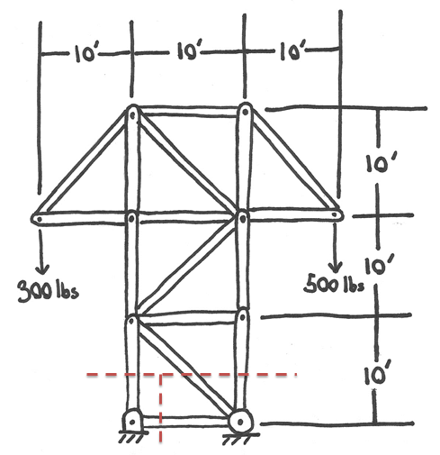
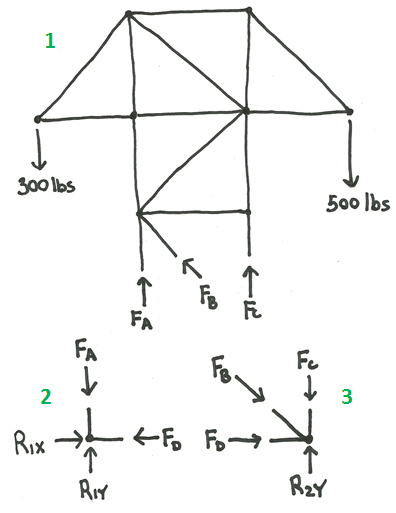
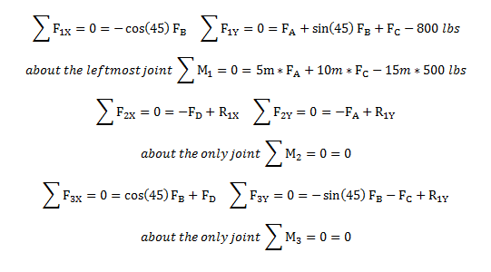
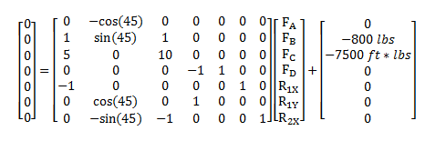
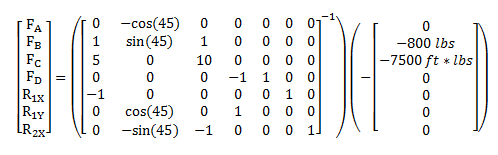
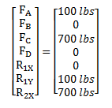

Method of Sections
The method of sections is a technique used to solve for the internal forces in a truss structure. The method of sections works by breaking down the truss structure into at least two separate sections and analyzing these sections as independent bodies. This method can be used to solve for the internal forces in both plane and space trusses. It has an advantage over the method of joints in that it can target specific members for analysis. This can allow engineers to quickly calculate the force on one or more critical members without performing a full analysis of the structure.
Method of Sections for Plane Trusses:
For a plane truss, you will draw an imaginary cutting line that will separate the truss structure into two separate rigid bodies for analysis. The internal forces on the members that are cut become external forces on the two sections that were created by cutting the truss into two separate bodies. By strategically placing the imaginary cutting line, engineers can find specific internal forces in the truss structure. This process is elaborated in the steps below.
- Make sure that the structure is a statically determinate truss structure (as outlined on the truss page) and that all external forces act on the joints, not the middle of one of the members. If these assumptions are not met the method of sections may not produce valid results.
- Choose an imaginary cutting line that will split the truss structure into two pieces. The cutting line should only cut through members; it should not cut directly through any of the joints. This cutting line does not necessarily need to be a line though. In can follow a curving path to target specific members and curve around the joints. You will only calculate the internal forces on the members that are cut through with the cutting line so if there is a specific member that you are trying to analyze, you should ensure that you cut through that member.
- Draw a free body diagram of each of the two or more sections that you have created. Include the external load forces, the external reaction forces, and the forces that each cut member would exert on each section. Remember that each member is a two force member so the members exert a force along the line between the two connection points on the member. You will also need to guess whether the member is in tension or compression. Members in compression will "push" on the section like member A does in the diagram above while members in tension will "pull" on the section like members B and C do in the diagram above. An incorrect guess will simply result in a negative answer later so it is not essential that the guess of tension or compression is correct. In fact, it is helpful to assume that all members are in compression, because this means all positive numbers for the calculated forces are compression forces and all negative numbers for the calculated forces are tensile forces.
- Calculate the equations of equilibrium for each of the sections. For a plane truss you should have three equations for each section. The sum of the forces horizontally will be zero, the sum of the forces vertically will be zero and the sum of the moments will be equal to zero.
- Count up the number of equations and the number of unknown variables. Each member you have cut through lead to one unknown force and there may also be unknown reaction forces. If you have more unknown forces than you have equations there are two options. First, try to solve for the reaction forces by treating the entire truss structure as a rigid body and using the equilibrium equations for the entire structure. If that does not work, try drawing a different cutting line that cuts through fewer members. These two methods can be used to solve for or eliminate some of the unknown forces in your equilibrium equations.
- Once you have enough equations to solve for all of the unknowns, you can solve for the unknown forces in two ways. The first way is to go through the system of equations and solve for the variables one at a time using algebra. This works well when there are just a few equations, but this becomes more difficult with larger sets of equations. The second way is to convert the system of equations into its matrix form and to solve all for all the unknowns at once. This takes more time to set up, but saves time for larger systems of equations.
- After solving for the forces, remember to label them as either compressive or tensile forces. If the assumption you made earlier for each member force (tensile or compressive) was incorrect the answer you calculated with the system of equations will be negative.

Method of Sections for Space Trusses:
The method of sections follows the same procedure for space trusses as it does for plane trusses except for a few differences. You will still need to cut the truss structure into two pieces, but in order to do this you will now have a cutting plane. There will be six equilibrium equations for each section in a space truss as well, where plane trusses only had three. In space trusses the sum of the forces in the X, Y, and Z directions will all be equal to zero and the sum of the moments about the X, Y, and Z axes will all be equal to zero for each section.
Worked Problems
Worked Problem 1:
A fellow engineer is worried about the forces in the base of this cable support truss. Calculate the forces in members A, B, C, and D of the loaded truss. Assume the members have negligible weights. The links have been labeled in blue.
| Work | Comments |
|  |
The first step is to place the imaginary cutting lines. There is no way to have one line that cuts through all four links we are interested in so two lines have been used to cut the truss structure into three separate sections. The lines are shown in the figure to the left. |
|  |
The next step is to draw free body diagrams of the sections we have created. To the left are the three free body diagrams with all the forces that act on each of the three sections. |
|  |
There are three equilibrium equations for each of the sections we have created. This gives us a total of nine equilibrium equations. The moment equations for the second and third sections are unhelpful though because all forces act through the same point which means that there are no moments exerted on those two sections. These two equations will not help in solving for the unknown forces and we really only have seven helpful equilibrium equations. We only have seven unknown forces though so this should still be enough equations to solve for all the unknowns. |
|  |
Since a system of seven equations is tedious to solve one variable at a time, we put the system of equations into matrix form so we can solve for all the unknowns at once. |
|  |
We manipulate the matrix equation to solve for the vector of unknown forces. |
|  |
Finally, we use a computer program or a calculator to perform the matrix operation and get the following result. The first four elements in the vector are the member forces we are interested in. The last three are the reaction forces. As we can see, members B and D are zero force members in the current loading conditions. |
 |
| Author: Jacob Moore has liscenced this work under a Creative Commons Attribution-NonCommercial 3.0 Unported License. |